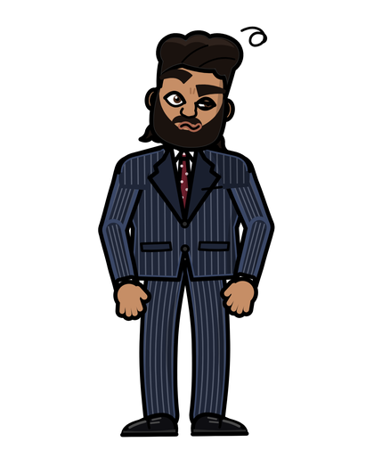

«¿Seis dedos? Tranquilo. En este set a nadie lo echan por un error. Lo echan por no revisarlo.»
Por qué pasan los errores
Recuerda la Escena 1: la IA inventa el clip completo y le cuesta mantener los detalles pequeños iguales de un cuadro a otro. Las cosas grandes y simples, como una pared o el cielo, las recuerda bien. Las cosas pequeñas y complicadas, como los dedos, los ojos o un texto, se le van corriendo.
Por eso casi todos los arreglos van en la misma dirección: hacerle el trabajo más fácil. Clips más cortos, menos cosas pasando a la vez y descripciones más precisas.
Manos raras
Dedos de más, dedos que se funden o manos que atraviesan objetos. Es el error más común.
- Si las manos no importan, sácalas del cuadro: un plano más cerrado a la cara o manos en los bolsillos.
- Una sola acción con las manos, y simple: sostener una taza sale mejor que amarrar unos cordones.
- Di dónde está el contacto: qué dedos tocan qué, y cómo empieza y termina el gesto.
- Parte de una imagen donde las manos ya estén bien: el video arranca desde ahí y tiene menos que inventar.
La vendedora dobla rápido varias camisas, las acomoda y saluda con las manos a los clientes.
La vendedora sostiene una camisa doblada con las dos manos, los pulgares encima. La levanta despacio hacia la cámara y la deja quieta a la altura del pecho.
Caras que cambian
La persona empieza siendo una y termina pareciéndose a otra. Pasa más en clips largos, con giros de cabeza bruscos o con ángulos extremos.
- Empieza desde una imagen de la cara, no solo desde texto.
- Clips cortos: 5 segundos se sostienen mejor que 10.
- Evita los giros completos: que voltee un poco, no que dé la vuelta.
- Describe a la persona con las mismas palabras exactas en todos los prompts.
Para que un personaje sea el mismo en toda una historia hay técnicas más avanzadas, como entrenar un personaje con tus fotos. Eso lo verás en El Rodaje.
Parpadeo y temblor
La imagen titila, la luz sube y baja sola o las texturas «hierven». Para reducirlo:
- Una sola fuente de luz clara, con su dirección. Varias luces de colores confunden al modelo.
- Evita patrones finos: rayas delgadas, rejillas o letras pequeñas tiemblan con facilidad.
- Movimientos de cámara suaves y lentos en vez de rápidos.
- Recorta en la edición los cuadros donde se nota; a veces el problema es solo el último segundo.
¿Regenerar, cambiar el prompt o recortar?
Esta es la decisión que más créditos te ahorra. Ve en este orden, del arreglo más barato al más caro:
La regla: máximo dos intentos iguales. Si el mismo error aparece dos veces, repetir es botar créditos.
Revisa tu Reel como un profesional
Toma el Reel que armaste en la Escena 4 y míralo clip por clip con la lista de abajo. Encuentra por lo menos un error y arréglalo con la opción más barata de las cinco de arriba. Cuando pase la revisión completa, está listo: publícalo si quieres, o guárdalo como la primera pieza de tu portafolio.
Antes de entregar
- ¿Miraste cada clip a velocidad normal y después cuadro por cuadro en las partes con manos y caras?
- ¿Las manos tienen cinco dedos y no atraviesan nada?
- ¿La persona es la misma del principio al final de cada clip y entre clips?
- ¿No hay parpadeo, luces que saltan ni texturas que se mueven solas?
- ¿No aparecen letras deformes, logos de marcas reales ni caras de personas reales sin permiso?
- ¿Los textos que pusiste en la edición están bien escritos, con tildes?
- ¿Lo viste completo en el celular, con sonido, de principio a fin?
¡Corte! Terminaste la Toma 1
Hace cinco escenas no sabías qué pasaba al darle «generar». Hoy escribes prompts que dirigen, hablas el idioma de la cámara, armas un Reel vertical con gancho y lo revisas antes de mostrarlo. Eso ya es dirigir.
«¡Corte y se queda! Ese Reel es tuyo. Guárdalo: es el primer cuadro de tu carrera como director.»
Ya hiciste un Reel. Ahora imagina contar una historia completa: el mismo personaje en cada plano, luz de película y sonido que se siente. Eso es El Rodaje. Y en el Corte Final lo conviertes en comerciales que puedes cobrar.
- Tu primer corto de 30 a 60 segundos, con un personaje que no cambia de cara.
- Tu primer comercial, con varias versiones del gancho para probar cuál funciona.
- Tu primera cotización en pesos y dólares, lista para mandar a un cliente.
Mándame tu Reel por DM a @fredy.plazalara: quiero verlo. Y si quieres seguir, el Pase de Director (El Rodaje + Corte Final) tiene precio especial durante el lanzamiento.